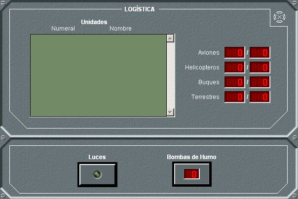

Dinámica de Bases
Logística / Miscelánea

Este panel de detalle agrupa las siguientes funciones:
- Logística: Muestra la lista de las unidades que están en la base, con su numeral y nombre. A la derecha de esta lista se resume la cantidad / capacidad de unidades de cada tipo en la base.
- Misceláneos: Permite realizar las siguientes operaciones:
- Encender y apagar las luces de navegación.
- Lanzar Bombas de Humo, y consultar la cantidad remanente en pañol.